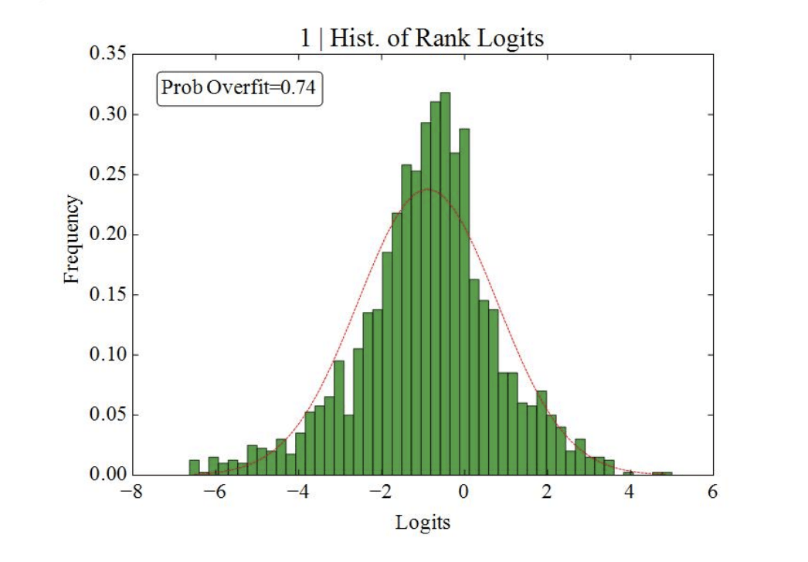
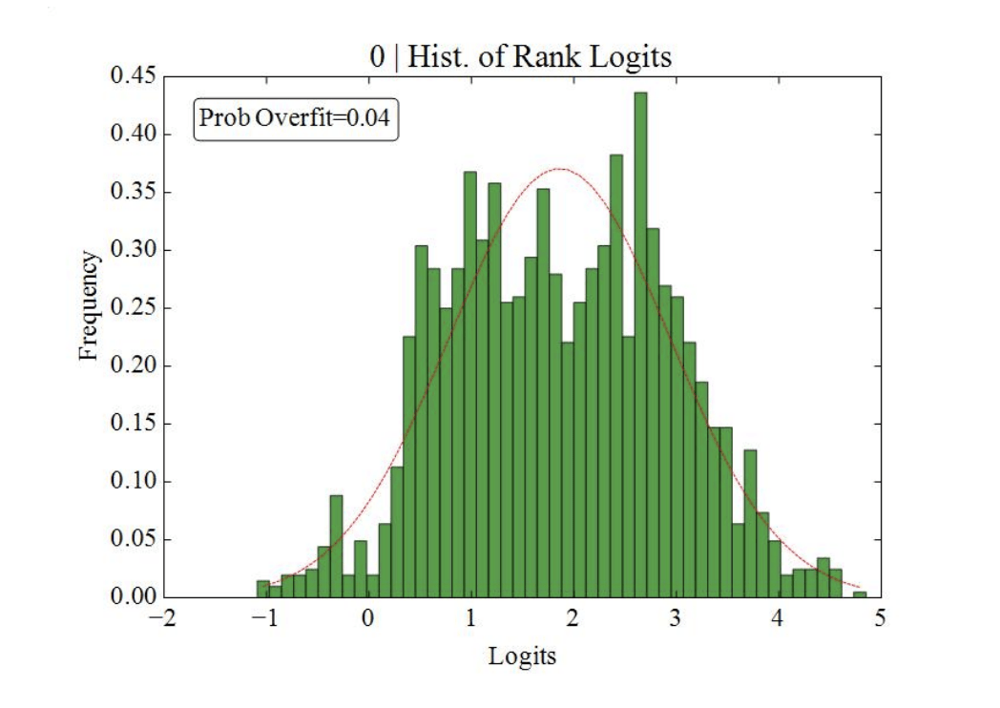

策略優化 – 如何避免過擬合？
出處:https://www.finlab.tw/backtesting-overfitting-probability/

當你做回測做久了，就會發現，找到「歷史報酬率」好的策略很簡單，但是找到「未來報酬率」好的策略非常難。原因在於做了過多的參數枚舉與優化，當樣本數夠大，自然會有極端的數據產生，就像是夜路走多了會碰到鬼，人多必有白痴，樹多必有枯枝，就像是量子力學中，波函數坍縮成我們所處的現實，代表著均值，但在極端的多重宇宙樣本中，你也有可能是總統，代表著眾多巧合下的極端事件。
本文就是用口語的方式，帶你瞭解如何判斷過擬合的演算法
牛頓從蘋果落地的現象，發現了萬有引力，F=ma，因為實驗的雜訊很小（風、熱能散失等等），才能有經典簡潔的公式，然而把牛頓的實驗，換到財經領域時，可能就不是這麼管用了，當我們在建模時，價格的雜訊遠大於規律，
我們很有可能是優化雜訊，而非優化價格的規律。
要怎麼辨別這兩者的不同呢？
我們可以先從直觀的角度出發，究竟歷史上成功的偉人，Bill Gates、Steve Jobs、Elon Musk，這些科技巨擘，他們之所以能夠有今天的成就，是一連串的巧合，還是他們有一些人格特質，促使他們的成功？另一個極端的例子，假如今天某人中了樂透彩而一夕爆富，那很明顯，他很可能是多重宇宙中，非常成功的一個版本，但他的成功，可能並非來自他的人格特質，而是來自運氣。今天就運氣跟命運，來討論策略模型過擬合的問題。
模型的過擬合，就像是簽樂透彩，只要參數夠多了，總會中獎。所以策略績效好，究竟是不是運氣好，最重要的事，就是要確保「實驗是有效的」。如何定義實驗是有效的呢？
樣本內的「最佳參數」在樣本外的「績效」也是顯著的機率是高的
聽不懂？別走，讓我舉個例子
這邊的「樣本內」就是指我們現在的現實世界，已經發生了的事情，例如我們知道 Steve Jobs 是頻果創辦人，將科技與時尚結合，促進科技的進步功不可沒，所以他就是我們在樣本內的「最佳人選」。而「樣本外」就是指那些我們沒見過的多重宇宙，在多重宇宙中，假如都有 Steve Jobs 這個人，而他都有一番豐功偉業，那就代表那是他貨真價實的實力。
回到策略的角度，如何驗證「貨真價實的策略」？
最簡單的方式，一般我們會使用 hold-out，將歷史資料分成樣本內（in-sample IS）和樣本外（out-of-sampe OOS）並且在 IS 做最佳化後，再用 OOS 驗證，這樣的方法有幾個缺點：
- 由於 IS 跟 OOS 都是人為定義，所以當重複優化很多次後，還是會對於 OOS 的績效越來越熟悉，最後不免還是用了 OOS 的資訊來設計模型
- 資料量的問題，回測跟驗證都需要一定長度的歷史數據，將歷史數據分成 IS 跟 OOS 顯然有點浪費
- OOS 通常是時間序列的尾端，代表近期的資料，對於策略效能有決定性的影響，然而卻不能拿來開發
所以比較好的方法是？
The probability of backtest overfitting的作者是這樣做的： Bailey, D.H., Borwein, J., Lopez de Prado, M. and Zhu, Q.J., 2016. The probability of backtest overfitting. Journal of Computational Finance, forthcoming.
1. 確定參數效果真的比較好
任何策略都有好與不好的時候，要確定參數效果很好，不是看績效是正的就好，而是要跟其他參數的績效作比較， 例如最近臺股上漲，雞犬昇天，所以任何人投資績效都是正的，但不帶表大家都是投資高手， 所以就算績效是正的，還要看績效的排名才行！
所以論文中的作者，針對所有參數產生出來績效，從「樣本內」找到「最佳參數」，並且將「樣本外的績效」由小到大排名，並且觀察「最佳參數」是否位於前 1/2 的機率
2. 產生多重的 IS 跟 OOS
假如只有一組 IS 跟 OOS 實再是太少了，這樣驗證的樣本會不足， 所以作者不使用「歷史數據」來區分 IS 跟 OOS，而是將回測整個跑完後，將績效的時間序列切成 S 份，任選 S/2 份當作 IS，其他當作 OOS，這樣的話可以產生超多種組合
實驗結果：
下圖就是作者使用此方法的實驗範例， x 代表「最佳參數」在「樣本外」的效果，越右邊代表效果越好，而 y 軸是樣本的數量 我們會發現，下圖這個例子，整個分佈偏向左邊，也就是 x 軸小於零，代表其實最佳化後，大部分的績效都是比較差的！ 每100個樣本，就有74個樣本，最佳化後的效果小於績效的中位數， 所以 74% 的機率，最佳化後的效果比較差

一個比較好的策略，應該會是如下圖，整個 每100個樣本，只有4個樣本，最佳化後的效果小於績效的中位數， 所以只有 4% 的機率，有過擬合的風險， 算是一個很不錯的參數優化過程

結果我上網找了一下，都沒有 python 的程式碼 所以假如大家有興趣，我之後可以提供這篇 paper 的程式碼， 雖然但我不確定大家有沒有興趣就是了XDDD